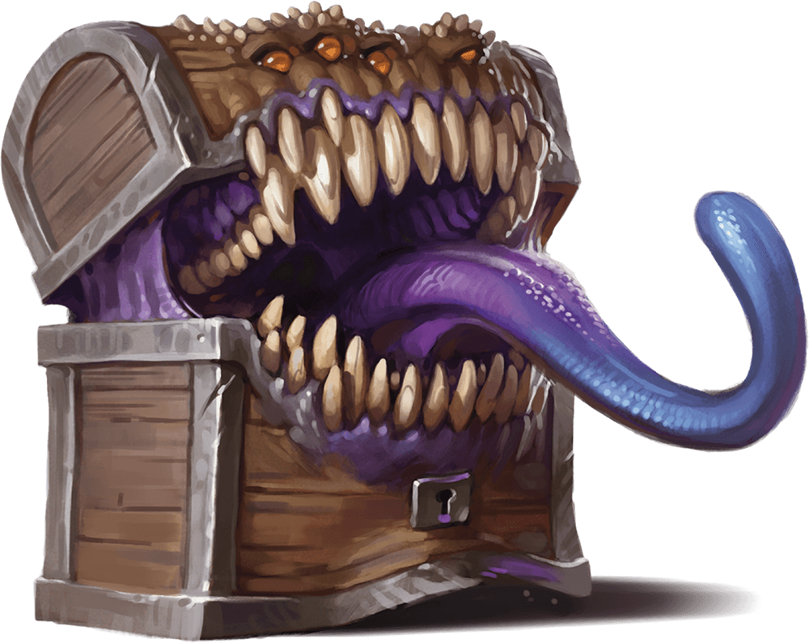
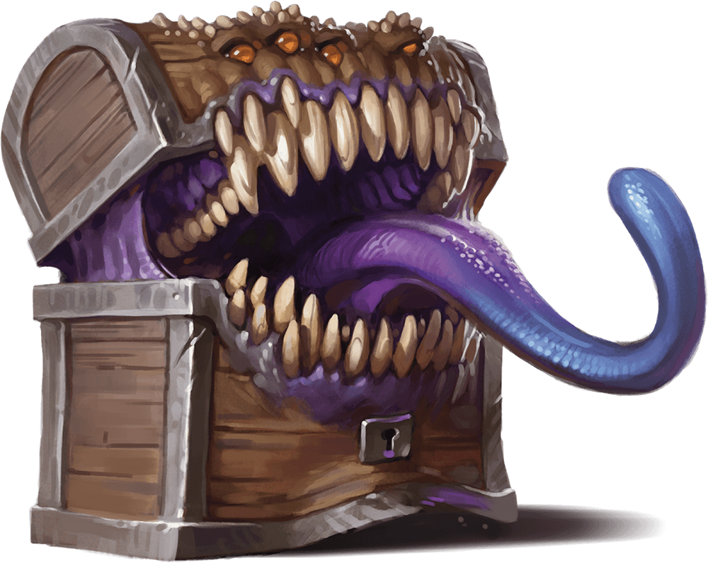
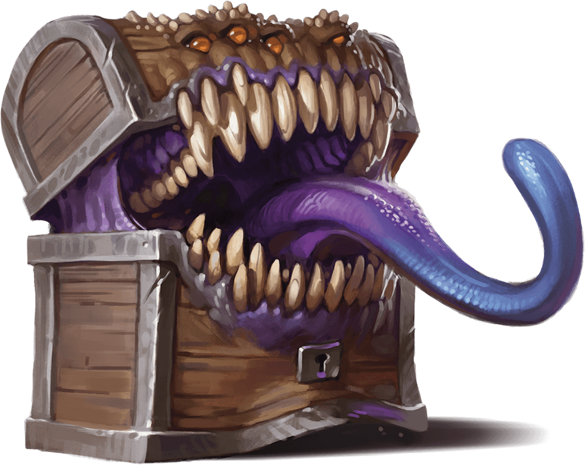
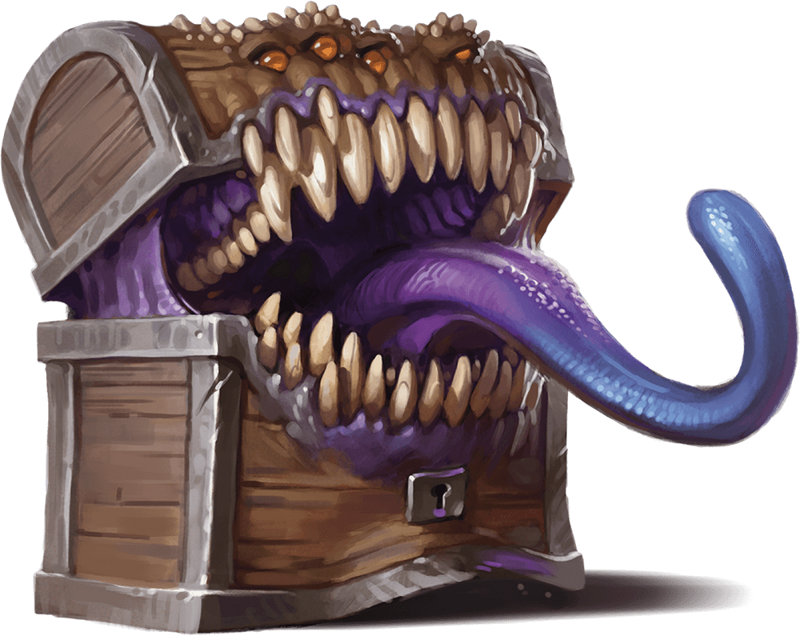
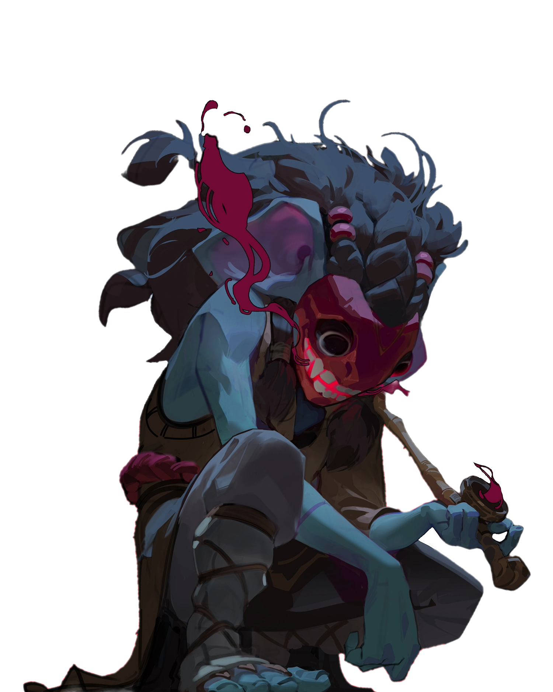
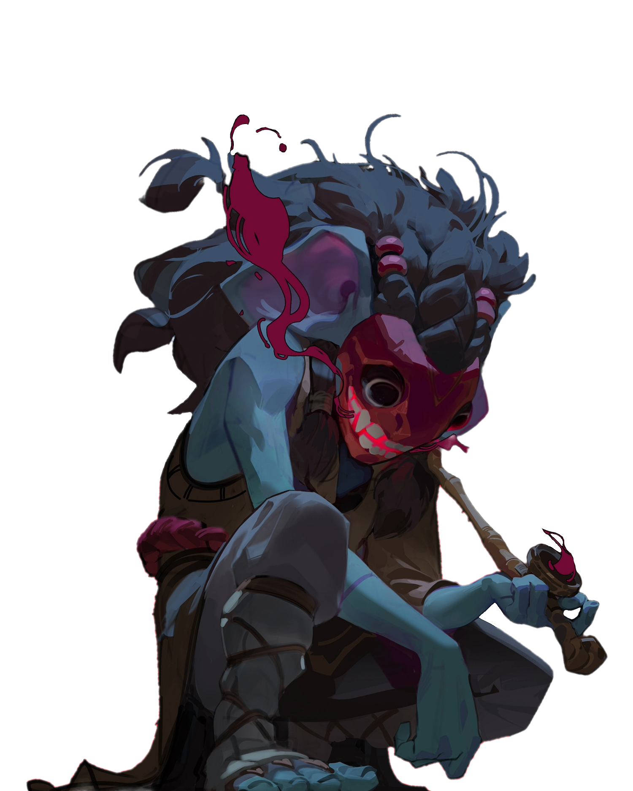

 

 



Gli Angeli Gli Angeli della Dreamtale sono diversi da quelli che conosciamo noi. Essi, infatti, sono individui che, grazie alle loro capacità, sono riusciti a impressionare un dio a tal punto da ricevere da esso l'opportunità di stare tra le sue fila. Gli dei non hanno realmente bisogno degli angeli; infatti, raramente comunicano o vedono il loro dio. Principalmente si limitano a vagare o a svolgere compiti assegnati. Gli angeli si dividono in Angeli e Arcangeli, i quali si distinguono per il numero di ali (2 ali = angelo, 4 ali = arcangelo). Gli angeli hanno la possibilità di diventare arcangeli venendo premiati una seconda volta per le proprie gesta o imprese. Un individuo non diventa immediatamente angelo; ciò avviene solo dopo la morte. L'anima di quest'ultimo non si dirige verso l'aldilà, come consuetudine, ma verso il dio, il quale gli dona un corpo angelico e un amuleto divino. Gli angeli possono inviare messaggi a una divinità consumando anime. Essendo scelti da dei diversi, gli angeli hanno ideali e capacità differenti; alcuni sono guerrieri, altri studiosi, ma tutti cercano di onorare il proprio dio.
Il Beholder è un essere descritto in una strana profezia, secondo la quale farà la sua comparsa il giorno in cui il quarto di luna giungerà alla fine. Si dice che sia in qualche modo legato ai Mimic. Tuttavia, nessuno conosce l'origine dei Beholder o quale essa possa essere.
I Ciclopi sono simili ai giganti, ma più piccoli e meno intelligenti. Possiedono un solo occhio, capace di mostrare l'obiettivo a cui si sta pensando, ovunque esso sia. Tuttavia, è l'unico scopo che possono vedere; tutto il resto appare sfocato o non appare affatto. Nel corso della storia, i Ciclopi sono stati costantemente sfruttati da umani, divinità e persino dai goblin. Nonostante ciò, si sono sempre rassegnati a vivere in questo modo, se si può chiamare vivere.
Gli Dei, si sà ben poco degli Dei. Sono nati in questo mondo per ragioni ignote, persino agli stessi Dei. Sono individui talentuosi e incredibilmente potenti, anche se limitati dalle azioni dei mortali. Sono 13 in totale e si dividono in gruppi chiamati 'Dogmi'. I Dogmi sono 7, con 2 dogmi che comprendono 3 Dei, 3 dogmi con 2 Dei e 1 dogma con un solo Dio. Ogni Dio possiede uno 'stigma', un segno disegnato dal Dio stesso che lo rappresenta. Ogni Dio ha il suo culto e il suo 'Dominio', che rappresenta i loro interessi. Ad esempio, Xeldigass è legato al tempo, quindi nel suo Dominio rientrano unità di tempo, orologi, strumenti di misurazione del tempo e concetti correlati. Gli Dei litigano talvolta a causa dei loro Domini. Nel migliore dei casi, condividono l'elemento, altrimenti scoppiano guerre e massacri, portati avanti dai loro fedeli in conflitti inutili. Sono molto più simili agli uomini di quanto si pensi: forse pazzi, forse malvagi e forse arroganti, ma da invidiare. Possiedono ciò che i mortali cercano e hanno raggiunto ciò che i mortali inseguono. Vivono ciò che i mortali sognano.
I Demoni sono esseri di origine ignota, la cui nascita rimane avvolta nel mistero. Emergono nel mondo con una maschera sul volto, tuttavia, non ricordano nulla del loro passato. La loro memoria e potenza, nonché la loro dimensione, aumentano o diminuiscono in base al numero di persone che li conoscono. Inizialmente, i Demoni hanno un corpo gassoso nero, ma la loro forma diventa sempre più solida man mano che il loro potere cresce. Nonostante questa peculiarità, i Demoni non sono particolarmente interessati alla fama; la cercano solo per prolungare la loro esistenza abbastanza a lungo da trovare un proprio 'campione', un individuo che incarna i loro ideali. Questo perché i Demoni collezionano anime e sono capaci di manipolare quelle delle persone. Anche gli dei erano interessati ai demoni e alle loro anime finché non hanno scoperto che i demoni non ne erano dotati. I Demoni possono diventare estremamente potenti, ma sono tutti mercanti e la loro merce preferita sono le anime che raccolgono. Cercano di evitare i conflitti, questo perché i demoni possono morire, per fare ciò basta distruggere la loro maschera, ovviamente i demoni non possono separarsi da essa, anche perché in quel caso scomparirebberò, quando un demone muore non lascia tracce, se non per la maschera e le anime collezionate al suo interno che fuoriescono dirigendosi verso l'aldilà.
I Diavoli bla bla bla...
I Draghi bla bla bla...
I Drider, noti anche come Aracnoidi, sono mostri con il corpo di un ragno ma con un busto e una testa umani. Essendo dotati di due cervelli, uno nella parte ragnesca e uno nella parte umana, questa specie può dividere le sue metà. Tuttavia, anche se la metà ragnesca ha un cervello, non è in grado di muoversi o sopravvivere autonomamente. Può resistere separata dalla metà umana per un massimo di 7 giorni. D'altra parte, la metà umana può "indossare" le gambe delle vittime catturate in precedenza, permettendo al Drider di assumere sembianze umane per circa 7 giorni. Trascorso questo periodo, se entrambe le metà rimangono divise, l'Aracnoide muore. sono immuni alla maggiorparte dei veleni e hanno la capacità di tessere ragnatele anche se diviso. Nella forma completa è un avversario davvero temibile, dotato di una enorme forza ma se diviso, l'Aracnoide è estremamente vulnerabile e utilizza la sua forma divisa solo per ingannare e avvicinare le prede. Gli Aracnoidi non provano rimorso nell'ingannare e nutrirsi delle proprie prede; è parte della loro natura.
I Druidi bla bla bla...
Gli Elementali bla bla bla...
Gli Elfi bla bla bla...
I Famigli bla bla bla...
I Fantasmi Sono mostri appartenenti alla categoria dei 'Non-Morti'. A essi è stata donata una seconda possibilità attraverso l'Ego sword, un'arma alimentata dal desiderio di vendetta. A differenza di quanto suggerito dal nome, l'Ego sword non è obbligatoriamente una spada; si manifesta come 'l'arma ideale' del fantasma che la impugna. Qualora il fantasma perdesse il desiderio di vendetta, l'Ego sword prenderà il controllo del braccio del fantasma e lo utilizzerà per trafiggerne il cuore. Questo non è l'unico pericolo legato all'impugnare un'Ego sword. Infatti, impugnandola, essa cercherà di invadere e corrompere il 'corpo' del fantasma. Ciò avviene poiché il corpo del fantasma è strettamente legato alla sua psiche. La corruzione inizia dalla mano che impugna l'Ego sword e prosegue fino a raggiungere il cuore. Se ciò accadesse, il fantasma perderebbe completamente il senno, e di lui rimarrebbe soltanto un ardente desiderio di vendetta.
Le Fate bla bla bla...
I Gargoyle bla bla bla...
I Giganti bla bla bla...
I Goblin bla bla bla...
I Golem bla bla bla...
Le Gorgoni bla bla bla...
Gli Hollow bla bla bla...
Gli Incubi bla bla bla...
I Lich bla bla bla...
I Maghi bla bla bla...
I Mimic bla bla bla...
I Nani bla bla bla...
Gli Orchi bla bla bla...
I Satiri bla bla bla...
Le Sirene bla bla bla...
Gli Slime bla bla bla...
I Tengu bla bla bla...
I Vampiri bla bla bla...
Gli Zombie bla bla bla...